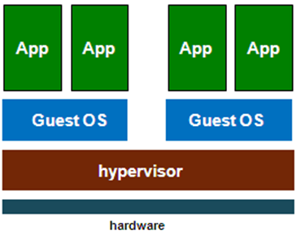

Gegeven door: Steven Trescinski van Gluo
Locatie: Corda Campus
Datum: 11/01/2017
Waarom Containers
Indien we een programma willen installeren op een nieuwe server kunnen we dit manueel doen door in een terminal commando’s in te geven om bepaalde pakketten te installeren. Dit is geen goede manier omdat het moeilijk is om dit te doen op veel verschillende servers. Er kunnen stappen overgeslagen worden omdat er vaak geen documentatie bijgehouden wordt. Het is dan ook zeer moeilijk om op een server van iemand anders te weten wat er allemaal al reeds op gedaan is.
Een tweede manier is door de installatie en configuratie uit te laten voeren door een configuratiemanagement programma. Een nadeel hiervan is dat de persoon die hier mee werkt veel kennis moet hebben om dit programma te kunnen begrijpen.
Containers bieden de oplossing omdat ze volledig na te maken zijn en omdat er geen speciale kennis van een configuratiemanagement programma nodig is.
Geschiedenis van containers
Containers zijn niet nieuw, er waren al andere technologieën zoals:
- Solaris
- LXC
- OpenVZ
- BSD Jails
Er is nu wel extra aandacht sinds Docker is uitgebracht.
Containers vs. Virtuele Machines
Een virtuele machine duurt lang om op te starten, meestal een aantal minuten en kan heel groot zijn. Een schijf van een virtuele machine is meestal minstens enkele GB’s groot. Dit komt omdat er een extra laag is tegenover een container, er dient telkens opnieuw een nieuwe besturingssysteem geïnstalleerd te worden bij elke nieuwe virtuele machine.

Een container werkt anders, er wordt enkel een isolatie gedaan binnen dezelfde kernel of besturingssysteem. Het is daarom ook veel efficiënter en sneller, een nieuwe container opstarten duurt enkele seconden. Er kunnen ook limieten gesteld worden want een container heeft zijn eigen “namespaces”:
- Netwerk
- Processenboom
- Bestandssysteem
- Gebruikers
Geheugen of processor limieten worden ingesteld met Cgroepen.
Ten laatste hebben containers slimmere bestandssystemen waardoor er verschillende lagen gedeeld kunnen worden tussen andere containers.
Docker
Docker maakt het mogelijk om containers te gebruiken met heel korte commando’s, dit is dus veel eenvoudiger dan vroeger.
Docker is ontstaan als een Platform-as-a-Service bedrijf, ze hadden hun eigen oplossing met een interne containertechnology ontwikkeld en hadden deze open source gemaakt. Wat ze niet verwacht hadden was dat Docker in een korte periode heel populair is geworden waardoor ze volledig omgeschakeld zijn van PaaS naar enkel nog Docker.
Docker heeft op dit moment enkele essentiële onderdelen namelijk:
- Docker Engine: het proces om containers te kunnen doen draaien.
- Images: dit zijn basissjablonen van systemen.
- Containers: een image met een aanpasbare laag.
- Registry: Een opslagplaats voor images van andere mensen.
Demo
Ten eerste hebben we Docker geïnstalleerd, dit was eenvoudig omdat er maar 1 commando nodig was omdat ik GNU/Linux gebruik.
curl -sSL https://get.docker.com/ | sh
Daarna hebben we enkele containers gestart.
docker run -ti ubuntu bash
Normaal gezien zou rm -rf een volledig besturingssysteem verwijderen maar in een Docker container is dit geen probleem omdat de container opnieuw aangemaakt kan worden in een paar seconden.
Daarna hebben we een drone doen opstijgen door enkele Twitter berichten te sturen.
Ten slotte hebben we met de hele groep een Docker Swarm aangemaakt. Dit is een cluster met containers. We hadden hiervoor elk een eigen virtuele machine in de cloud gekregen.
Reflectie
Ik had al eerder met Docker containers gewerkt, dat was ook de reden dat ik besloten had om naar dit seminarie te komen. Ik wilde graag meer weten wat er allemaal gedaan kon worden met containers.
Het was ook interessant om te zien dat de technologie om containers aan te maken al lang bestond maar dat het nu pas populair is geworden door de eenvoudigheid van Docker. Een gebruikersvriendelijke applicatie is dus vaak beter dan een efficiëntere maar onbruikbare applicatie.
Het gebruik van Docker Swarm deed mij ook realiseren dat er over de opslag van gegevens goed moet worden nagedacht omdat er heel veel containers aan dezelfde gegevens moeten kunnen geraken of misschien ook niet. Docker is ook enkel maar schaalbaar indien alle onderdelen kunnen schalen.
Tegenover de rest van de groep had ik als voordeel dat ik GNU/Linux op mijn laptop geïnstalleerd had, zij hadden Windows en moesten Docker in een virtuele machine draaien waar GNU/Linux op geïnstalleerd was.
Het voordeel van seminaries is dat er veel nieuwe theoretische kennis opgedaan kan worden maar omdat er tijdens dit seminarie een hands-on gedeelte was, was ik meer gemotiveerd om constant te volgen en te luisteren. Omdat ik meer gemotiveerd ben tijdens dit soort van seminaries hoop ik er op dat Hogeschool PXL zulke seminaries zal blijven aanbieden aan toekomstige studenten. Ook hoop ik dat toekomstige seminaries voor mij, als werknemer ook op deze manier zullen verlopen.
Ik weet zeker dat ik mijn kennis van Docker nog zal kunnen gebruiken tijdens mijn stage dus alles wat ik tijdens dit seminarie heb gezien zal ik zeker onthouden.